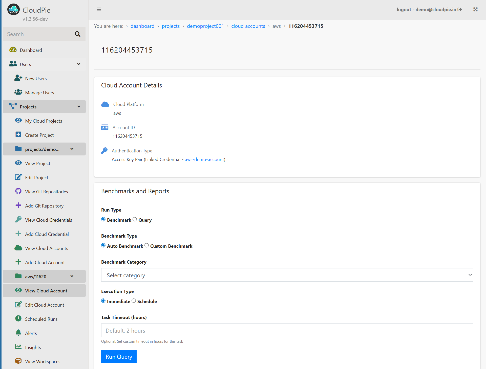
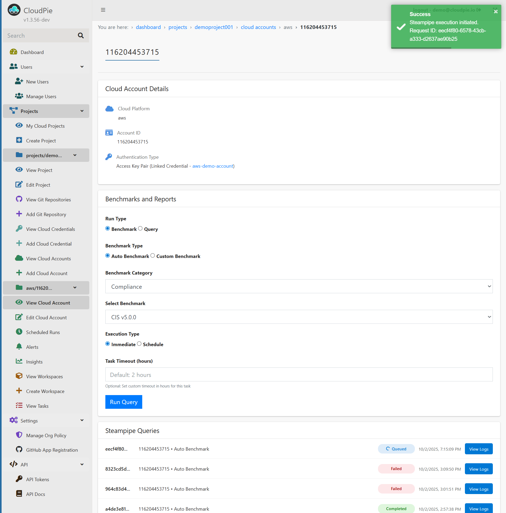
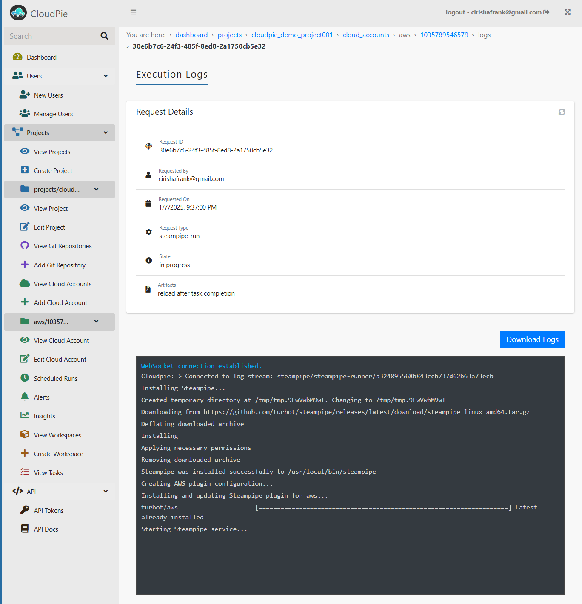
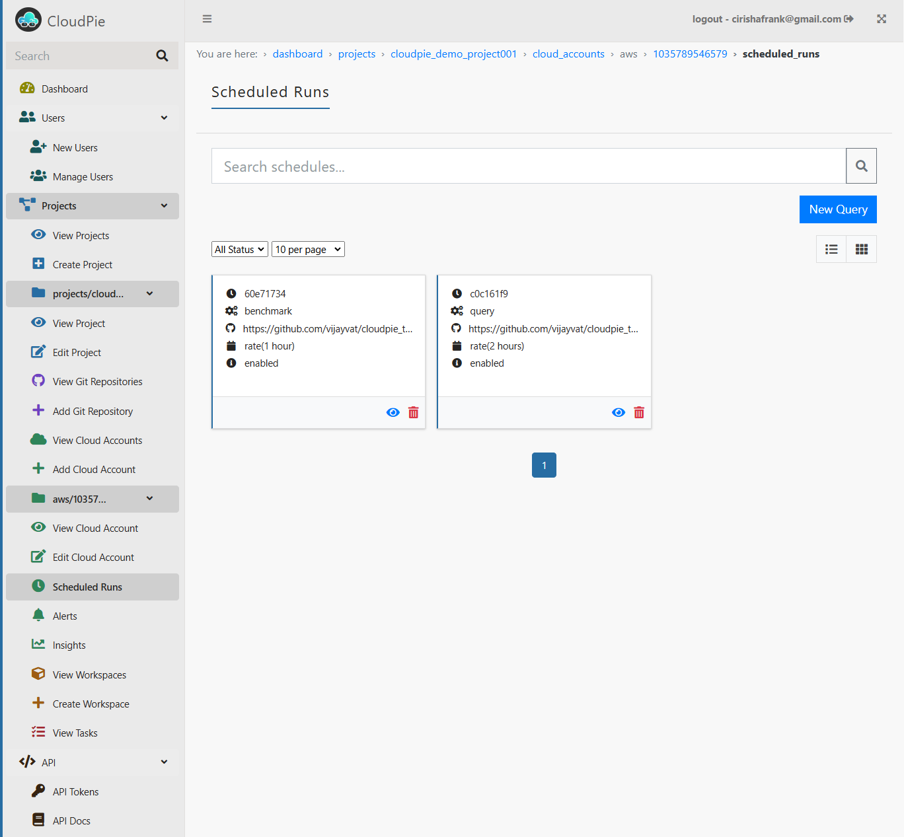

Benchmarks and Queries
Cloudpie allows you to run benchmarks and queries on your connected cloud accounts. You can execute them immediately or schedule them for recurring runs. This section explains how to use the query form, run immediate checks, and manage scheduled runs.
Running a Benchmark or Query
To execute a Benchmark or a Query on a specific cloud account:
- Access the Cloud Account Page
- From the Dashboard, select the project and open the View Cloud Accounts menu.
- Choose the desired cloud account to open its Cloud Account Page. Alongside the account details, you will see the Benchmark & Query Execution form.
Example Image: Cloud Account Page

- Fill Out the Execution Form
- Run Type:
- Benchmark: Run one of the predefined benchmark categories (e.g., Compliance, Cost, Access Risks).
- Query: Run a custom SQL query from a registered Git repository.
- Benchmark Type:
- Auto Benchmark: Automatically provides checks under the chosen category.
- Custom Benchmark: Allows selection of a specific benchmark from the available list.
- Benchmark Category:
- Choose the type of checks you want to run (e.g., Compliance, Cost Optimization, Public Access Risks).
- Once selected, the dropdown for benchmarks is dynamically populated with available checks for that category.
- Execution Type:
- Immediate: Executes the query or benchmark right away.
- Schedule: Configure recurring execution.
- Task Timeout (Optional):
- Specify a timeout in hours for the task, or leave it as the default (
2 hours).
- Specify a timeout in hours for the task, or leave it as the default (
- Submit the Form:
- Click Run Query to execute immediately or save as a scheduled run.
Immediate Run
- When Execution Type is set to Immediate, the request is tracked on the Cloud Account page.
- A new entry appears in the list with real-time updates on the status of the run.
Example Image: Form submission and query status

- Use the View Logs button to:
- Tail live logs for active runs.
- Access and download logs for completed runs.
- Download the CSV output of query or benchmark results.
Example Image: Query execution Logs

Scheduling Runs
To configure a recurring run:
- In the Execution Form, choose Schedule instead of Immediate.
- Provide one of the following:
- Cron Expression: (e.g.,
0 0 * * *for daily at midnight). - Rate Expression: (e.g.,
rate(2 hours)for every 2 hours). - After scheduling, open the Scheduled Runs menu in the sidebar for the cloud account.
- This page shows the scheduled run alongside others configured for the same account.
Example Image: Scheduled Runs Page

Manage Scheduled Runs
- Click a scheduled run to view its details and history.
- Enable or disable the schedule to pause or resume execution.
- Each historical run entry provides access to:
- Live logs for in-progress runs.
- Completed logs for past runs.
- CSV output of the results.
Notes on Running Benchmarks and Queries
- Auto Benchmark: Automatically provides checks under the chosen category (Compliance, Cost, Access Risks).
- Custom Benchmark: Lets you select specific benchmark versions (e.g., CIS v1.5, CIS v2.0, FedRAMP, etc.).
- Logs and Status Updates: Always updated in real time during and after execution.
- Downloadable Outputs: Results can be exported as CSVs for:
- ETL pipelines
- Analytics and AI/ML workflows